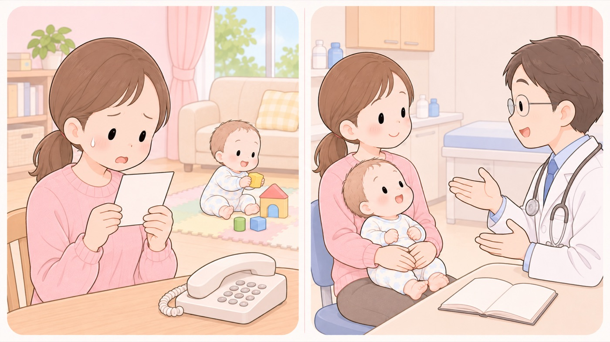

熱でけいれんを起こした後の、予防接種
すべてのワクチンを打てる。最終発作から期間を空ける必要もない。打たずに待つほうが発作のリスクは高い
熱性けいれんを一度でも見ると、次の予防接種で熱が出るのが怖くなります。以前は、最後の発作から2〜3か月空けるという基準が使われていました。
日本小児神経学会のガイドラインは2023年に改訂され、現行の予防接種はすべて接種してよい、当日の体調に留意すればすべての予防接種を最終発作からの期間にかかわらず速やかに接種してよいとしています。

- すること：期間を空けずに、予定どおり受ける
ガイドラインは、当日の体調に留意すれば、すべての予防接種を最終発作からの期間にかかわらず速やかに接種してよいとしています。
- すること：打つ前に、起こりうる副反応と、そのときの対応を医師に聞いておく
ガイドラインは、個別にワクチンの有用性と起こりうる副反応、具体的な対応策を事前に十分説明し、保護者の同意を得ておくことを条件に挙げています。聞いておくことは、親の側の準備にもなります。
- すること：打たずに待つほうのリスクを、数字で知っておく
2009年のインフルエンザのワクチンでは、接種後1〜3日の熱性けいれんの発症リスクが約2倍（95%信頼区間1.15〜3.51）という報告があります。
一方、インフルエンザに自然に罹ったときは、1日目で116.70倍（同62.81〜216.90）です。ガイドラインは、自然に罹ったときの発作誘発リスクのほうが明らかに高いと結論しています。
- すること：熱が出やすいワクチンと、その時期を知っておく
ガイドラインは、麻疹を含む生ワクチンでは接種後2週間以内（とくに7〜10日）、小児用肺炎球菌・Hib・DPT-IPV・日本脳炎などの不活化ワクチンでは1週間以内（とくに0〜2日）がほとんどだとしています。予定を立てるときの目安になります。
- しないこと：接種後にけいれんを起こしたからといって、以降の接種をやめない
豪州の小児病院の調査では、ワクチン接種後の熱性けいれんは、そうでない熱性けいれんと比べて入院期間、ICU管理の有無、発作が続いた時間などに有意な差がなく、以降のワクチン接種を中止する必要はないと結論されています。ガイドラインがこれを引いています。
- しないこと：ワクチンが神経の病気を起こす、という説明を受け取らない
ガイドラインは、ワクチン接種によって得られる利益よりも副反応などによる不利益が上回るという報告は、現在までみられないとしています。
期間を空けることがある場合
ガイドラインは、ほかの病気との見分けのために、最終発作からの経過観察期間が 必要な場合があるとも書いています。空けるかどうかは医師が決めます。
親の側から延期を申し出る理由にはなりません。 予防接種は発熱する機会そのものを減らすので、 ガイドラインは熱性けいれんの既往がある子にも積極的に行うべきだとしています。
この項目の根拠
- 熱性けいれん（熱性発作）診療ガイドライン2023（日本小児神経学会・Minds ガイドラインライブラリ）（新しいタブで開きます）
CQ8-1として、熱性けいれんの既往がある小児は現行の予防接種はすべて接種してよく、ただし個別にワクチンの有用性と起こりうる副反応および具体的な対応策を事前に十分説明し保護者に同意を得ておくこと。CQ8-3として、当日の体調に留意すればすべての予防接種を最終発作からの期間にかかわらず速やかに接種してよいが、他疾患との鑑別のために最終発作からの経過観察期間が必要な場合があること。2009年のインフルエンザA（H1N1）パンデミックワクチン接種後1〜3日の熱性けいれん発症リスクは対象期間に比し2倍程度（95%CI 1.15〜3.51）高くなるとの報告がある一方、インフルエンザ自然罹患1日目は116.70倍（95%CI 62.81〜216.90）、自然罹患1〜3日目は10.12倍（95%CI 3.82〜26.82）であり、明らかにワクチン接種の発作誘発リスクよりも自然罹患による発作誘発リスクが高いと考えられること。豪州の小児病院での前方視的検討で、ワクチン接種後熱性けいれんは非ワクチン接種後熱性けいれんと比較して入院期間・ICU管理の有無・発作持続時間・24時間以内の発作再発・退院時に抗てんかん薬を要する例の割合などに有意差はなく、ワクチン接種後に熱性けいれんを発症しても以降のワクチン接種を中止する必要はないと結論づけられたこと。ワクチン接種により得られる利益よりも副反応などによる不利益が上回るという報告は現在までみられないこと。CQ8-2として、麻疹ワクチンや小児用肺炎球菌ワクチン接種後の発熱率が比較的高いが他のワクチン接種後にも発熱する可能性は考慮するべきであり、発熱時期は麻疹などの生ワクチンでは接種後2週間以内（特に7〜10日）、小児用肺炎球菌ワクチン・Hibワクチン・DPT-IPVワクチン・日本脳炎などの不活化ワクチンでは1週間以内（特に0〜2日）がほとんどであること。予防接種は発熱機会を減少させることにつながるため、熱性けいれん既往児に予防接種を積極的に行うべきであること。1994年の予防接種法改正でけいれん性疾患の既往をもつ小児の扱いが禁忌から接種要注意者に変更されたこと。
関連キーワード熱性けいれん熱性痙攣ひきつけ既往予防接種ワクチン延期待つ期間2か月打てる受けられるインフルエンザ麻疹肺炎球菌